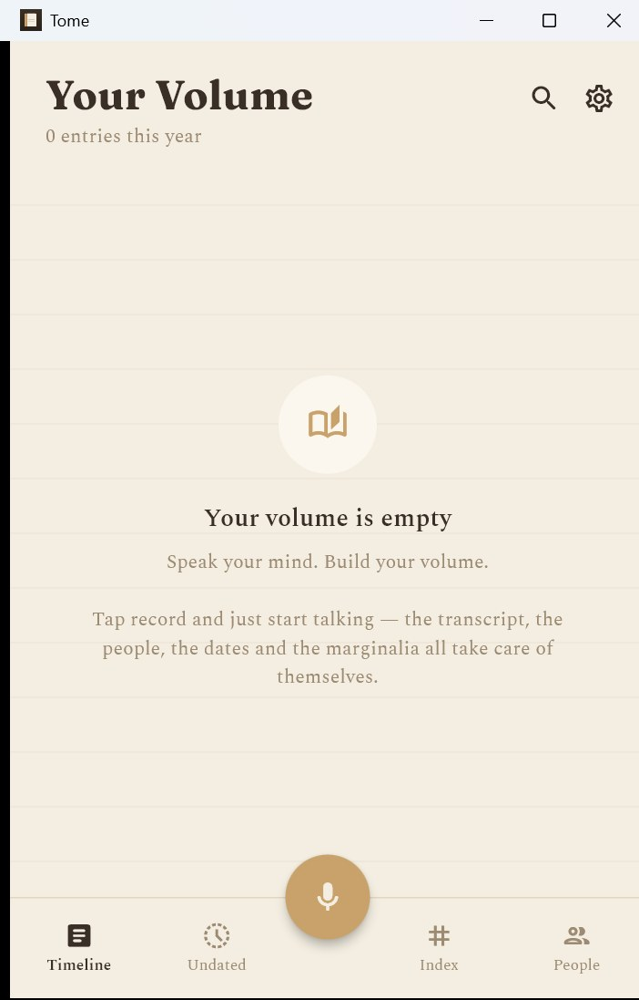

Tome is a voice journal that organizes itself. Speak, and it transcribes what you said, gives it a title, dates it, and remembers who was there. No typing, no filing.
Part
Voice journaling app
Built with
Flutter, Firebase
Also called
Audio Journal
Status
Stalled
Screens

The Windows build, on a fresh install
To be writtenFull-size phone screenshots and the feature graphic (the copies sent in chat were shrunk).
Specifications
Recording
Speak, and it transcribes, titles, dates, and tags who was there
Extraction
One Claude call per entry pulls out people, dates, places, topics, tags, and a summary
Search
By keyword, tag, or person
Local-first
Works with no account, key, or network. Every save lands on the device first and syncs later, so a bad connection never blocks a save.
Sync
Across devices, through Firebase
Your Story
Memories sorted into periods of a life: Roots, Childhood, Coming of Age, Building a Life, The Middle Years, Later Chapters
Interviewer
Storyteller plan. A guided, spoken interview about your life that asks the smaller follow-up questions and writes it up in your own words.
Import
Bring in journals or memoirs already written. Tome sorts them into the right periods automatically.
Export
The whole volume as a Word document to print, share, or hand down
Privacy
No ads, nothing sold, nothing used to train AI models
Platforms
Flutter for Android, iOS, web, macOS, Windows, and Linux
Type
Fraunces for display, Spectral for transcripts, bundled so it reads right offline
Android
Signed release builds through Google Play, v1.0.1, August 2026
Lineage
Started as Audio Journal
Where it stands
To be writtenWhere Tome stands now, and what's next for it.